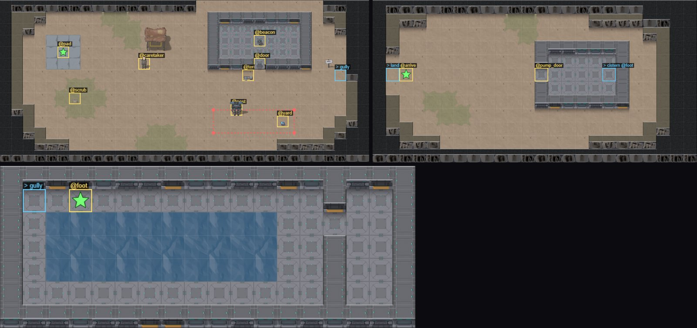

Class 3, Lecture 9 - The Tile Map Editor, part 2¶
What you will have at the end¶
Three maps joined into one place. The crew walks east out of the relay yard into your gully, through the pump house, and down a flight of stairs to a cistern: a walkway round a tank of standing water.
You will also have stood the first things on your maps: a trail sign, a pump and a crate. And you will have redrawn the walk the sentry takes, and given the crew a way round it.

The yard (top left), the gully (top right) and the cistern (below) in the Tile Map Editor: the exits are outlined in blue, the marks in yellow, and a star shows where the crew arrives.Five files change today: the yard's map, the gully's map, the tileset, a new map for the
cistern, and mission.amd. There is still nothing to do down there. Lectures 10 to 12
fill the three areas.
The video¶
About 6 minutes. Subtitles are available in the player.
Before you start¶
MyAwayas Lecture 8 left it:ground\gully.tilesreads the same as the block at the end of Lecture 8, Step 6, andsbs lint MyAwaysaysclean.- The
MyAwayfolder open in VS Code. - A command prompt open in
C:\Cosmos\data\missions.
Words for this lecture:
| Word | Meaning |
|---|---|
| Exit | A mark that leads to another area. Whoever stops on it goes there |
| Known | Whether the ship knows an area is there. The transporter only reaches known areas |
| Placing | Saying where on a map a record stands: Area:, and then Mark: or At: |
| Patrol | The cells a hostile walks between, round and round |
| Scenery | A prop with nothing to it. It is drawn, and it is in the way |
As in Lecture 8, every step is given as text to type, and the editor's way is given beside it. Every editor step on this page was read from the add-on's own files. Nobody has yet checked them against a real screen.
Step 1 - A way out of the yard¶
In the game an exit is a cell at the edge of a map: walk onto it and you are in the next
area. An exit is a mark with a special name: to_, and then the key of the area it leads to.
The gully's key is gully, so the way to it is a mark named to_gully.
Open ground\landing.tiles. It needs one new legend line and one changed cell, at the
east end of the seventh row of the map.
In the editor: + Entry, Kind dust, Mark to_gully, Character >, OK. Then
Paint, and click cell 29, 6.
Or in the text. Add the last line here to the end of the legend:
and change the seventh row of the map, the one with the T in it:
Save. In the editor an exit is outlined in blue, with the name of the area it leads to.
Step 2 - A way back¶
Open ground\gully.tiles and do the same there, at its west end.
In the editor: + Entry, Kind dust, Mark to_landing, Character <, OK.
Paint, and click cell 1, 5.
Or in the text:
Save both files and run sbs lint MyAway. It should say clean.
Three rules about exits. Each was measured for this page.
An exit takes whoever stops on it. Walking across an exit on the way to somewhere else does nothing. Click the exit itself.
Each person goes through alone. The party does not move together. One crew member can be in the gully while the others are still in the yard.
They arrive beside the way back, never on it. Walk onto to_gully at 29, 6 and you
stand in the gully at cell 1, 4, next to its to_landing. Walk back and you stand in the
yard at 29, 5.
The handheld's Look app lists the ways out of the area you are in, as buttons, once
the party knows where they lead: Go to Kesh Relay. Pressing one walks you there.
Step 3 - What the ship knows¶
In Lecture 8 the transporter put you straight into the gully. That was useful then. It would spoil things now: a crew that can beam anywhere never has to find the way.
Two lines in an area's header decide what the transporter may do:
| Line | Means |
|---|---|
known: no |
The ship does not know this area is there. It is not on the Beam app until a crew member has walked into it |
beam: no |
The transporter can never lock on here, known or not. Underground, say |
In gully.tiles, add one line under entry:. This one is typed. The editor has no box
for it.
Measured: at the start the Beam app can reach the yard and nowhere else. After one crew member has walked into the gully, it can reach the gully too, for everybody.
Step 4 - A new kind of ground¶
The cistern needs water: something the crew can see across and cannot walk on. The starter's tileset has no such kind. Add one.
Open ground\starter.tileset. It opens as a table, the Tileset Editor: a row for each
kind, with boxes to tick for Walk, See and Tall. Press + Kind for a new
row, name it water, tick See, untick Walk, and set its Look to water.
Or press Text and add one line under cliff:
look=water is a picture the frontier art pack has. The words on a kind's line are the
rules it has. A kind with see and no walk is what makes a map readable: the far side
is in view, and getting there is the puzzle.
Step 5 - A third area¶
Make a new file in the ground folder, as in Lecture 8, Step 1. Name it
cistern.tiles. Press Text and type:
# Under the pump house: a walkway round a tank of standing water.
area: cistern
title: The Cistern
tileset: starter
entry: foot
known: no
beam: no
size: 18x7
legend:
W: wall
_: floor
~: water
u: floor @to_gully
f: floor @foot
---
WWWWWWWWWWWWWWWWWW
Wu_f__________W__W
W_~~~~~~~~~~_____W
W_~~~~~~~~~~__W__W
W_~~~~~~~~~~__W__W
W_____________W__W
WWWWWWWWWWWWWWWWWW
Save, and look at it in the editor. The tank is ten cells by three. The walkway runs all the way round it. At the east end a wall with one gap in it shuts off a small room.
This area already has its way back: u, the mark to_gully, in the top left corner. It
has known: no and beam: no, so the only way in is on foot.
Step 6 - Stairs down¶
The way down is inside the pump house, against its east wall.
In gully.tiles, in the editor: + Entry, Kind floor, Mark to_cistern, Character
a small v, OK. Paint, and click cell 17, 5.
Or in the text:
Step 7 - Where they arrive¶
A crew member who takes an exit arrives beside the way back. That is usually right. When
it is not, an area file can say where its exits lead, in a block of its own named
exits:. It goes after the legend and before the ---.
In gully.tiles, in the text:
Read that one line as: the mark to_cistern leads to the area cistern, and whoever
takes it arrives beside the mark foot.
The editor shows exits and has no way to edit this block. Type it.
With the block, a crew member who takes the stairs stands at cell 2, 1 of the cistern,
beside foot. Without it they stand at 1, 2, beside the way back. One cell is not much.
In a big area it is the difference between arriving at the gate and arriving in the
middle of the square.
exits: has a second use. A mark does not have to be named to_ and an area. Any mark
is an exit if a line in this block says where it leads. A mark named ladder, with the
line ladder: cistern @foot, was tried for this page, and it went down like the stairs.
Save everything and run lint. It should say clean.
Step 8 - A thing at a cell¶
Now mission.amd. A record that stands on a map says where in two fields. The first is
always Area:. The second is one of two:
| Field | Takes | Use it for |
|---|---|---|
At: |
A cell: across, a comma, down | A loose thing: a crate, a sign, a dropped key |
Mark: |
The name of a mark in that area's file | A thing that belongs to the drawing: a door in its gap, a machine in its room |
Start with At:. Find the end of the Props section. The last record in it is the Tent,
which is three lines and a fence. Under the Tent's closing ---, leave a blank line and
add:
### [Trail sign](sign)
---
Area: landing
At: 28, 5
Sprite: prop:sign
---
A painted board on a post: PUMP HOUSE, and an arrow pointing east.
At: 28, 5 is 28 across and 5 down, counted from 0, in the area landing. That is the
cell above your exit and one to the left.
In the game the sign stands by the exit. A click on it walks you up beside it, and its
line is on the handheld's Look app. Sprite: is the picture. The names come from the art packs: prop: and a word for a
thing, fig: and a word for a figure. Further reading has where to find the list.
Save, and open landing.tiles in the editor. With Things switched on, the editor
draws what mission.amd stands on this map. The sign is there, at 28, 5. In Kinds a
prop is an amber square; in Art it is its picture.
Move drags it. Press Move, drag the sign one cell, and let go. Then look at
mission.amd: the editor has rewritten the At: line for you. Press Undo move on
the toolbar to put it back. Ctrl+Z will not do it, because the change was made in a
different file.
Step 9 - A thing on a mark¶
The pump stands in the pump house. It belongs to that room, so it gets a mark.
In gully.tiles, in the editor: + Entry, Kind floor, Mark pump, Character a
small p, OK. Paint, and click cell 15, 4.
Or in the text:
Then in mission.amd, under the Trail sign:
// SCENERY again: no words, so nothing offers to use it. It only stands there, and blocks.
### [The pump](pump)
---
Area: gully
Mark: pump
Sprite: prop:machinery
Blocks: yes
---
### [Crate](gully_crate)
---
Area: gully
At: 6, 9
Sprite: prop:crate
Blocks: yes
---
Three things to see in those two records.
Blocks: yes means nobody can walk through it. Without that line the crew walks straight
over a prop.
Neither record has any words under its fence, and neither has a field that does anything. A prop like that is scenery. It is drawn, it is in the way, and a click on it only walks you up to it. The Trail sign is not scenery, because it has a line of description: stand beside it and the handheld's Look app shows you that line.
And one rule that is easy to get wrong. A mark's name goes in Mark:, never in
At:. At: reads numbers only. A word written there reads as nothing, and the prop is
never placed. Lint tells you.
In the editor, Move works on the pump too, and it does something different. The pump
stands on a mark, so dragging it moves the mark: the p in the map moves, and the
.amd is not touched.
Step 10 - The sentry's walk¶
Find the sentry in the Hostiles section. One of its fields is a walk:
A patrol is a list of cells. Each cell is across, a space, down. Between cells there is a semicolon. The sentry walks from each to the next, and from the last back to the first.
Open landing.tiles in the editor. The patrol is drawn as a dashed loop with a dot at
each cell. Make it longer. Change the line to:
In the editor you can drag the dots instead, with Move. Each drag rewrites one cell
of the Patrol: line.
Look at what the longer walk does to your map. The keycard at 24, 10 is still inside the loop. The terminal, at 21, 6, is three cells from the top of it, and the sentry notices anyone within four.
So is everyone who walks past the front of the relay house, and that row is the only way
east. Give the crew another one: a path behind the relay house, between its back wall and
the edge of the map. In landing.tiles, paint the top row with dust (.) from 17, 0 to
27, 0, eleven cells. The first row of the map becomes:
The path joins the yard at both ends, at 17, 1 and at 27, 1. Go that way to the trail sign and the exit, and you never come nearer the loop than five cells: one more than the sentry can notice. That is why the loop grows west, and its east end comes in to 25. A click on the sign stands you on the cell beside it, 27, 5. With a corner at 27, 9 that cell would be four from the loop, and the sentry would find you reading.
Step 11 - Check it¶
It should say clean. Each row below was tried on the finished files, one change at a
time.
| The mistake | What lint says |
|---|---|
@to_landng in the gully |
tiles-exit: @to_landng is named like an exit, but there is no area 'landng' (and no exits: line for it) |
to_cistern: cistrn @foot |
tiles-exit: exit to_cistern leads to 'cistrn', which is no area in this mission |
to_cistern: cistern @feet |
tiles-exit: exit to_cistern arrives at @feet, which is not a mark in cistern |
to_cistern: cistern foot, with no @ |
tiles-exit: arrives at 'foot', which is neither @ and a mark's name nor x, y - so it is ignored. In the game they arrive beside the way back, as if the block were not there |
The exit's legend line says rock |
tiles-exit: exit @to_landing is on ground nobody can walk onto |
| An exit in the legend that is drawn nowhere | tiles-mark-unplaced. This is all lint says when an area cannot be reached |
The water line missing from the tileset |
tiles-unknown-kind, an error, in cistern.tiles |
sea for see in the tileset |
tileset-syntax, an error, and then tiles-unknown-tileset for every area: one wrong word switches off the checks on all three maps |
Area: guly |
tiles-unknown-area: pump: no tile area 'guly' in this mission |
Mark: pmp |
tiles-unknown-mark: pump: no mark 'pmp' in gully - it is never placed |
At: to_gully |
tiles-at-not-a-cell: At: takes x, y - a mark name goes in Mark: |
At: 40, 5 |
tiles-off-map: sign: At: 40, 5 is off the map (landing is 32 x 14) |
At: 5, 28, the two numbers the wrong way round |
tiles-off-map, when you are lucky. If both numbers fit on the map, lint is silent and the thing stands somewhere else |
| A patrol cell off the map | tiles-off-map |
| A patrol cell on rock | tiles-unwalkable: sentry: Patrol 25, 12 is rock, which cannot be walked |
Patrol: 18 9, 25 9, 25 11, 18 11, commas where the semicolons go |
patrol-shape: it is read as one point, and the rest is ignored. In the game the sentry never moved. It stood at 18, 9 for as long as the test ran |
Blocks: yse |
unknown-enum-value |
A finding about a placement is printed under its own heading:
== mission.amd (tiles) ==
[WARNING] line 210:7: pump: no mark 'pmp' in gully - it is never placed (tiles-unknown-mark)
What lint cannot see¶
All of these lint clean.
| The mistake | What happens |
|---|---|
A prop with no Area: line, or with no Mark: and no At: |
It is not placed. mast.runtime.log in the mission folder names it and says why: 'Trail sign' (sign) has no Area:, so it is nowhere. |
At: 5, 28, and lint did warn |
It is placed all the same, off the edge of the map, where nobody can reach it |
A prop At: a cliff or a rock |
Allowed, and lint is right to be silent: a prop may stand anywhere. Only people have to stand where they can walk |
Both Mark: and At: on one record |
Mark: wins. The sign stood on the pad |
Sprite: prop:sgn, a picture that is not there |
It is placed, and nothing is drawn. Not seen on a screen for this page |
look=watr in the tileset |
Nothing says so. In the editor's table the look is outlined in red. Not seen on a screen for this page |
| The yard's exit never drawn | tiles-mark-unplaced, once, about the yard. Not a word about the two areas that can no longer be reached |
Two spellings that look wrong and work: At: 28 5, with a space and no comma; and
Patrol: 18, 9; 25, 9; 25, 11; 18, 11, with commas inside each cell. Use the spelling
on this page anyway.
When something is missing from a map, read mast.runtime.log first. The game names
every record it could not place.
Step 12 - Play it¶
- Beam down. Open Beam: there is nowhere else to go.
- Walk east along the north side of the yard, well clear of the sentry: click the path behind the relay house first, then the trail sign: you walk up beside it. Open Look to read it. Then click the cell under the sign and to the right, the exit.
- You are in the gully. Open Beam again: it offers
To Kesh Relay. A Beam list never names the area you are standing in. The gully is on it now from everywhere else: the cistern's list, in a moment, readsTo The Dry GullyandTo Kesh Relay. - Walk into the pump house. Click the pump: you walk up to it, and that is all. Click the cell against the east wall, the stairs.
- You are in the cistern. Click the water: you walk to the edge and stop. Walk round the tank and through the gap into the east room.
- Go back up the stairs, and back to the yard.
That walk was made by a script for this page, with a stand-in console: every exit, the click on the water, and the clicks on the pump and the crate.
If something goes wrong¶
| What you see | Why | What to do |
|---|---|---|
| You walk onto the exit and nothing happens | You walked across it to somewhere else | Click the exit cell itself |
You walk onto the exit and nothing happens, and lint says tiles-exit |
The mark's name does not end in an area's key | Check the name against the other file's area: line |
| A thing is not on the map | Its Area: or Mark: names nothing, or it has no place at all. mast.runtime.log in the mission folder names it and says why |
Read that file, then run lint |
| The sentry stands still | A Patrol: cell it cannot reach, or commas where the semicolons go |
Lint says tiles-unwalkable, or patrol-shape |
| The cistern is solid black in the editor's Kinds view | The water line is missing from the tileset |
Step 4 |
Exercise¶
- Stand a second crate in the cistern's east room, with
At:. Find its cell with the mouse in the editor first. Run lint. - Move your crate with the Move tool, and read the new
At:line. - Give the gully a second way down: a mark named
ladderon a floor cell of the pump house, and a line in theexits:block that sends it to the cistern. Take it out again afterwards. - Break it and read lint: misspell
to_landing; write the pump's mark inAt:; put a patrol cell on the relay house wall.
Then answer on paper:
- A crew member walks from the gully to the yard. Which cell do they stand on?
- Why does the pump get a mark and the crate a cell?
- The cistern has
beam: no. What would the crew be able to skip without it?
Checkpoint¶
You are done when all five are true:
sbs lint MyAwaysaysclean.- You have walked from the landing pad to the east room of the cistern and back.
- The Beam app offers the gully only after somebody has walked there, and never the cistern.
- Your trail sign, pump and crate are where the page says, and the sentry walks the longer loop.
- You can say when to use
Mark:and when to useAt:.
Next¶
Lecture 10 puts a door in the gap in the pump house wall, and gives the crew things to pick up, read and use.
Further reading¶
Nothing here is needed for Lecture 10.
- "Ground tile maps" in the library documentation: "Placing things on the ground", and "Big things cover more than one cell".
- The picture names. Each art pack lists its own, in
__lib__\media, in the pack'stileartfolder, in a file namedmanifest.json. Search it forprop:andfig:.
Download this lecture's finished files (a zip of its example folder).